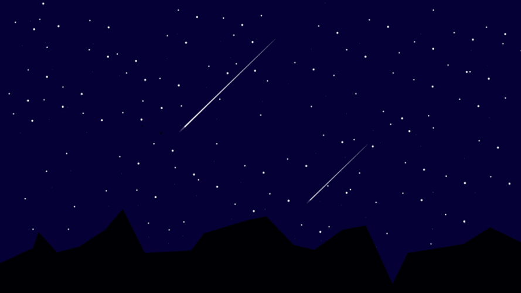
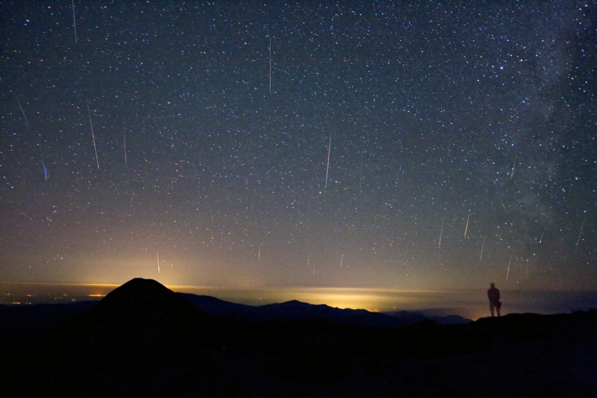
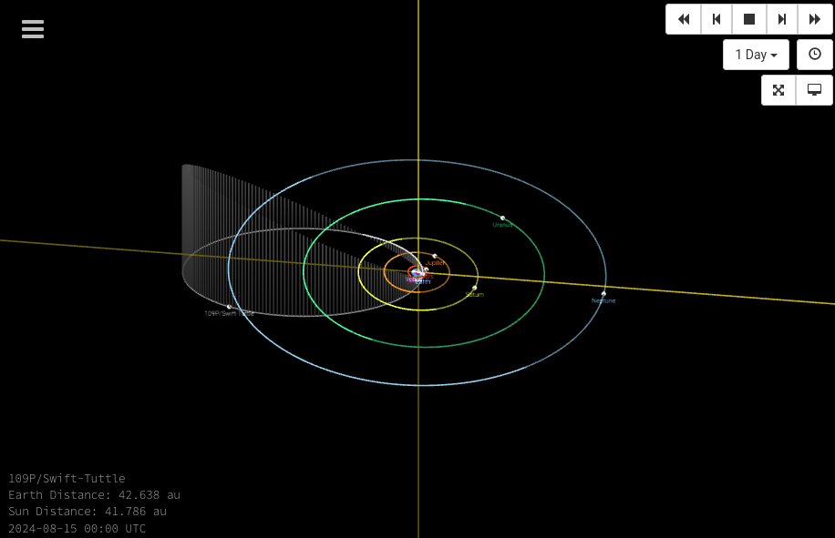

Stjerneskud
Astronomi C
Jacob Debel
Har I set nogle stjerneskud for nyligt?

Højsæson omkring d. 12. aug hvert år

Her er grunden

https://ssd.jpl.nasa.gov/tools/sbdb_lookup.html#/?sstr=109p&view=V
flashcards
Hvornår optræder stjerneskudssværmen Perseiderne?
Hvad er et stjerneskud?
Hvad sker der, når Jorden bevæger sig gennem resterne af en komet?
Hvorfra stammer såkaldte meteorsværme?
Hvordan ser en skitse ud, som viser, at Perseiderne optræder på samme tidspunkt hvert år?
Hvad hedder kometen, som er årsag til Perseiderne? Hvad er dennes omløbstid om Solen?
Hvorfor stiger antallet af stjerneskud efter midnat?
Hvorfor ser stjerneskuddene ud til at udstråle fra samme punkt på himlen (radianten)?
Hvorfra stammer navner Perseiderne?
Hvorfor kaldes Perseiderne også for Sankt Laurentii tårer?
Hvor er kometen, som er årsag til Perseiderne, for øjeblikket i sin bane, og hvornår passerer den igen Jordens bane?
Lidt litteratur
Skant Laurentii tårer rammer nattehimlen - Kristeligt Dagblad pdf
eller
https://www.kristeligt-dagblad.dk/bagsiden/skt.-laurentii-taarer-rammer-nattehimlen
https://science.nasa.gov/science-news/science-at-nasa/2015/11aug_perseids/
https://www.chiff.com/home_life/holiday/perseids.htm
Meteorer